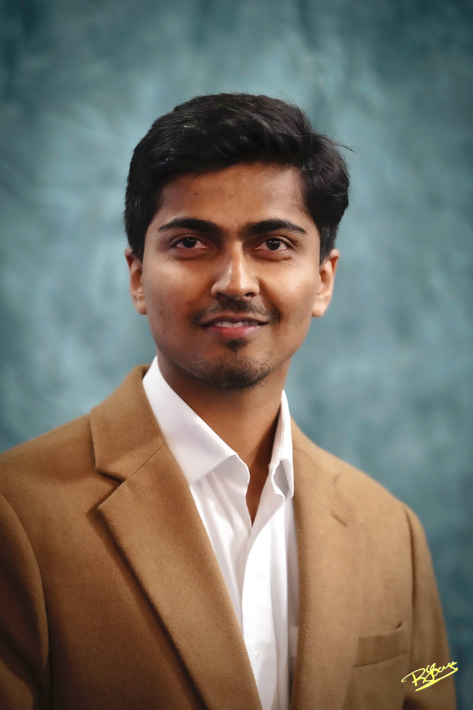

Data science / Insurance
RiskRate
An insurance pricing pipeline built with Python and SQL using more than 678,000 motor policies. I corrected a data issue that overstated estimated pure premiums by 36.3% and deployed an interactive pricing app.
I study mathematical structure and turn complex data into useful, carefully tested tools.
My work spans Lie algebra gradings, combinatorial game theory, healthcare, insurance, and accessible mathematics education.

01 / About
I earned a Ph.D. in pure mathematics from Memorial University of Newfoundland in 2026. My doctoral work extends methods for classifying cyclic gradings of classical Lie algebras across characteristics. I have coauthored a peer-reviewed paper on combinatorial game theory and a preprint on Lie algebra gradings, and presented my research at an international workshop.
Alongside research, I build data science projects and teach mathematics. I enjoy moving between abstract ideas and practical problems, from evaluating predictive models to creating more accessible learning experiences.
Read about my experience02 / Selected work
Data science / Insurance
An insurance pricing pipeline built with Python and SQL using more than 678,000 motor policies. I corrected a data issue that overstated estimated pure premiums by 36.3% and deployed an interactive pricing app.
Data science / Healthcare
With an Erdős Institute team, I helped model 30-day readmissions from synthetic health records. Our random forest reached about 0.90 AUC and 0.94 recall in patient-level cross-validation.
Mikhail Kochetov and Vishal Yadav · arXiv:2608.05023
Alfie Davies and Vishal Yadav · Electronic Journal of Combinatorics, 32(4), P4.10
04 / Learning
IBM Data Science Professional Certificate
IBM · August 2026. Twelve courses covering Python, SQL, data analysis, visualization, and machine learning.
Erdős Institute Data Science Boot Camp
Completed with Distinction · November 2025.
05 / Explore more
Keep exploring
Reach out about research, data science, or mathematics education.